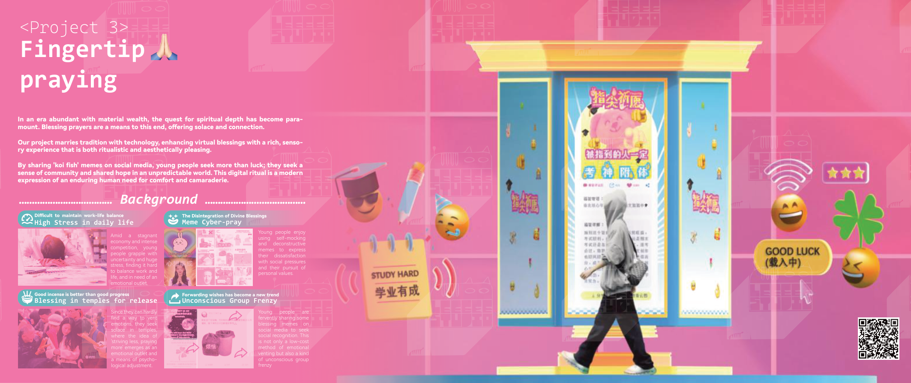
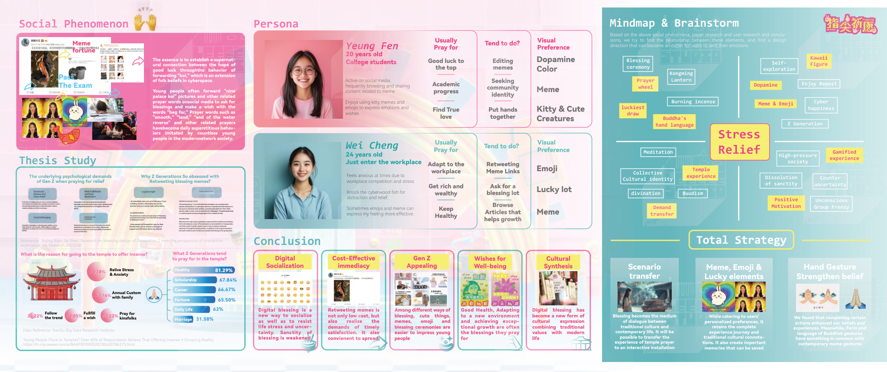
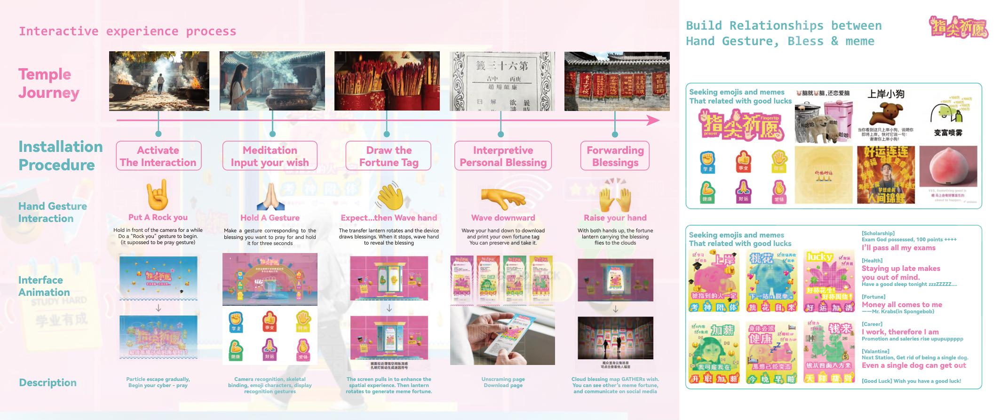
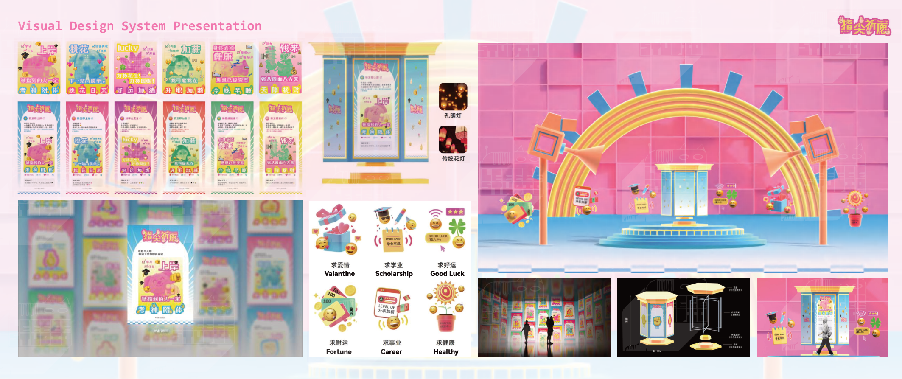
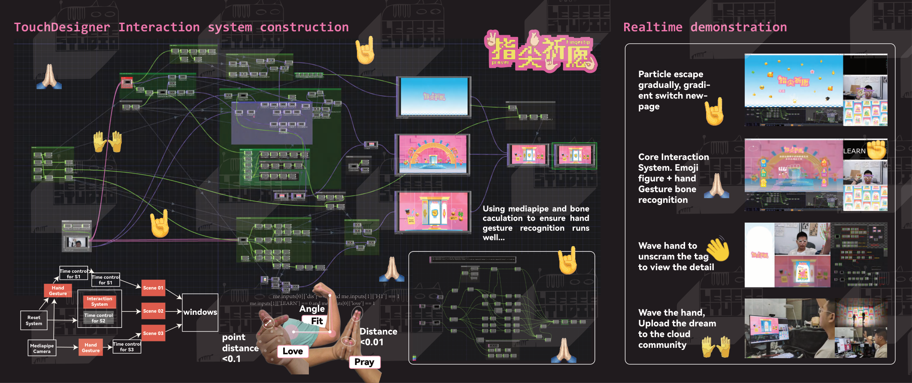

Project 03
FingerTip praying
互动装置概念与系统探索。以“祈福 meme / emoji / 手势仪式”作为当代情绪出口的现象为切入，结合用户研究与交互流程设计；并在 TouchDesigner 中搭建实时系统，尝试用手势识别把“祈愿”转译为可视化与可分享的互动体验。





互动装置概念与系统探索。以“祈福 meme / emoji / 手势仪式”作为当代情绪出口的现象为切入，结合用户研究与交互流程设计；并在 TouchDesigner 中搭建实时系统，尝试用手势识别把“祈愿”转译为可视化与可分享的互动体验。




